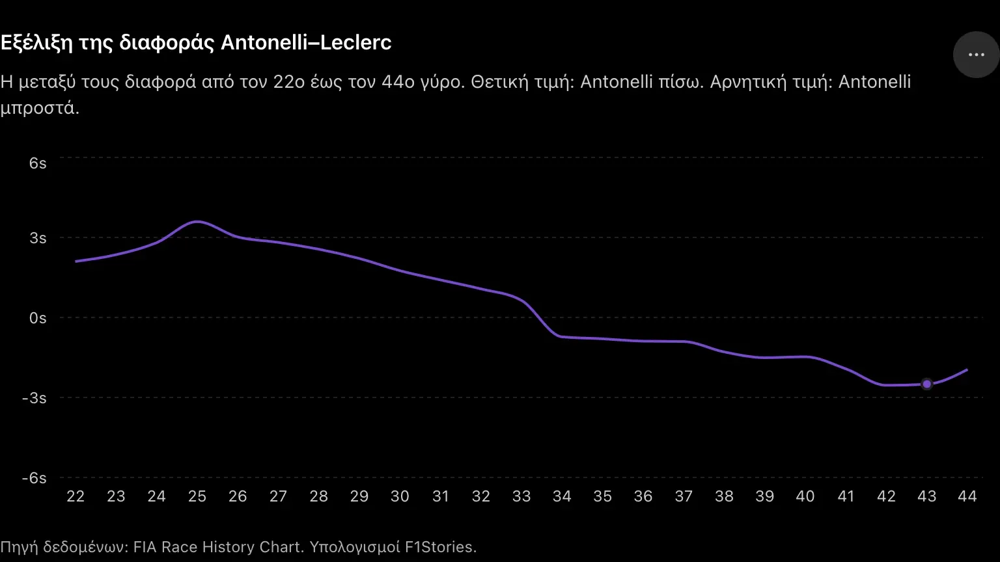
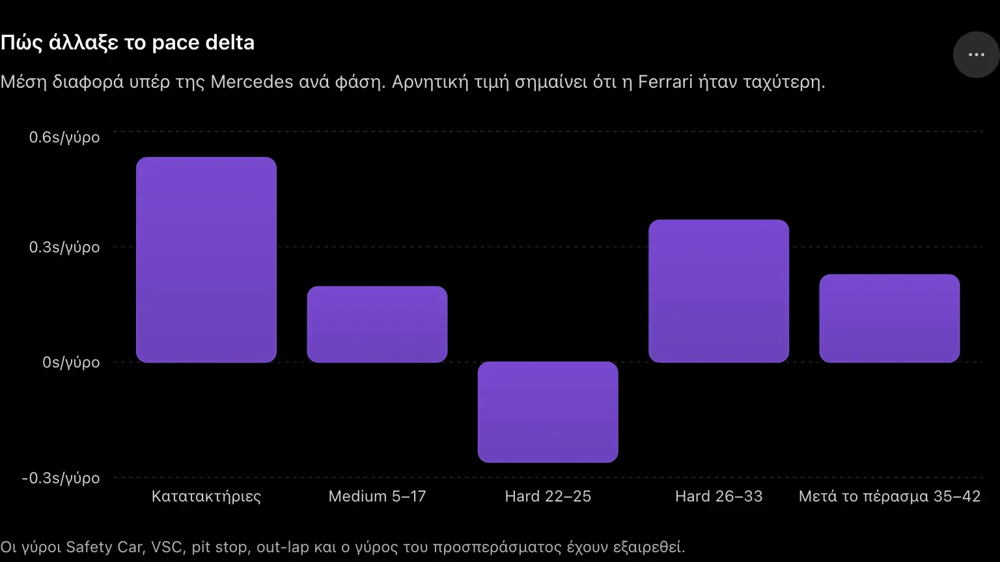
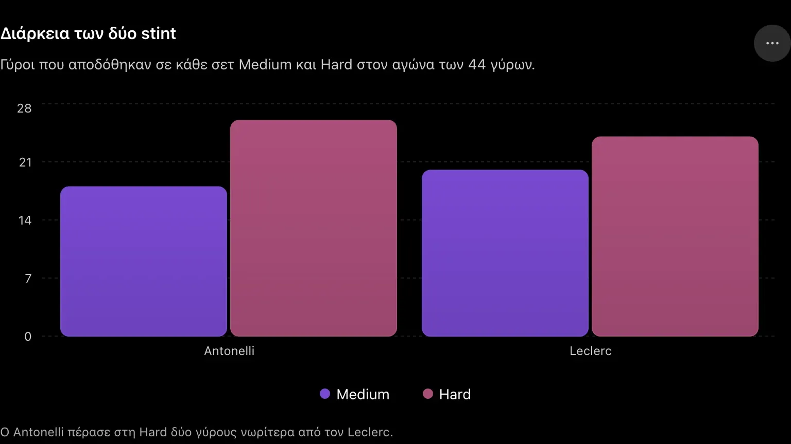
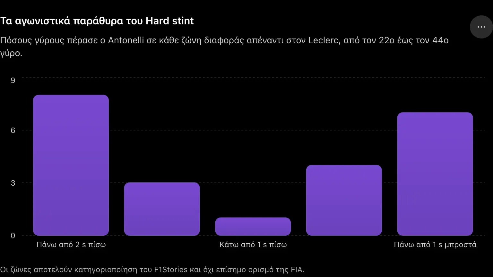

Συντακτική ταυτότητα & πηγές
Στις κατατακτήριες δοκιμές του Spa, η εικόνα έμοιαζε ξεκάθαρη. Ο Kimi Antonelli πήρε την pole position με 1:44.361, ενώ ο Charles Leclerc περιορίστηκε στην πέμπτη θέση με 1:44.893. Η διαφορά των 0,532 δευτερολέπτων σε έναν γύρο έδειχνε ότι η Mercedes διέθετε ένα σαφώς ισχυρότερο πακέτο από τη Ferrari.
Μία ημέρα αργότερα, όμως, ο Leclerc τερμάτισε μόλις 1,952 δευτερόλεπτα πίσω από τον Antonelli. Είχε προηγηθεί μετά το Virtual Safety Car, ανάγκασε τη Mercedes να τον κυνηγήσει και έχασε τη νίκη μόνο όταν ο Antonelli τον προσπέρασε στην πίστα δέκα γύρους πριν από το τέλος.
Η Mercedes ήταν το ταχύτερο μονοθέσιο του αγώνα. Αυτό δεν αμφισβητείται. Η πραγματική διαφορά, όμως, δεν ήταν τόσο μεγάλη όσο άφηναν να εννοηθεί οι κατατακτήριες.
Η σύγκριση του long-run pace αποκαλύπτει έναν πολύ πιο σύνθετο αγώνα: η Ferrari μπορούσε να ακολουθήσει τη Mercedes με τη Medium, ήταν ταχύτερη στην αρχή του stint με τη Hard και τελικά έχασε όταν η W17 άρχισε να διατηρεί τον ρυθμό της καλύτερα όσο αυξανόταν η ηλικία των ελαστικών.
Πώς διαβάστηκαν τα δεδομένα
Η ανάλυση βασίζεται στο επίσημο Race History Chart της FIA. Δεν χρησιμοποιήθηκαν οι γύροι 1–4 λόγω του αρχικού Safety Car, ούτε οι γύροι 18–21, στους οποίους περιλαμβάνονταν pit stops, Virtual Safety Car και out-laps. Ο γύρος 34 αντιμετωπίζεται χωριστά, επειδή περιλαμβάνει το προσπέρασμα του Antonelli, ενώ για τη σύγκριση μετά την αλλαγή της πρωτοπορίας χρησιμοποιούνται κυρίως οι γύροι 35–42, πριν από τη διαχείριση του τερματισμού.
Οι μέσοι χρόνοι δεν μπορούν να απομονώσουν πλήρως την επίδραση του βρόμικου αέρα, της κίνησης, της ανάπτυξης ηλεκτρικής ενέργειας ή των διαφορετικών οδηγιών διαχείρισης. Δείχνουν, όμως, πώς εξελίχθηκε η πραγματική απόδοση των δύο μονοθεσίων μέσα στον αγώνα.
Η εξέλιξη του δεύτερου stint
Το παρακάτω γράφημα παρουσιάζει τη διαφορά του Antonelli από τον Leclerc μετά τα pit stops. Θετική τιμή σημαίνει ότι η Mercedes βρισκόταν πίσω από τη Ferrari. Αρνητική τιμή σημαίνει ότι ο Antonelli είχε πλέον περάσει μπροστά.
Εξέλιξη της διαφοράς Antonelli–Leclerc
Η μεταξύ τους διαφορά από τον 22ο έως τον 44ο γύρο. Θετική τιμή: Antonelli πίσω. Αρνητική τιμή: Antonelli μπροστά.

Στην αρχή του Hard stint, ο Leclerc δεν βρέθηκε απλώς μπροστά λόγω του VSC. Κατάφερε να αυξήσει και τη διαφορά. Από περίπου 2,1 δευτερόλεπτα στον 22ο γύρο, το πλεονέκτημά του έφτασε τα 3,594 δευτερόλεπτα στον 25ο.
Από εκεί και μετά, η καμπύλη άλλαξε κατεύθυνση. Η Mercedes άρχισε να μειώνει τη διαφορά σχεδόν σε κάθε γύρο. Στον 29ο γύρο ο Antonelli ήταν 2,213 δευτερόλεπτα πίσω, στον 31ο είχε φτάσει στο 1,408 και στον 33ο βρισκόταν μόλις 0,641 δευτερόλεπτα πίσω. Στον επόμενο γύρο είχε ήδη ολοκληρώσει το προσπέρασμα και προηγούνταν κατά 0,726.
Αυτή η εξέλιξη είναι πολύ πιο χρήσιμη από μια απλή σύγκριση των καλύτερων γύρων. Δείχνει πότε άλλαξε η ισορροπία ανάμεσα στα δύο μονοθέσια και, κυρίως, πώς η Mercedes μετέτρεψε ένα μικρό πλεονέκτημα απόδοσης σε πραγματικό προσπέρασμα.
Η διαφορά των κατατακτήριων συρρικνώθηκε στον αγώνα
Στον έναν γύρο, η Mercedes ήταν 0,532 δευτερόλεπτα ταχύτερη. Στο πρώτο καθαρό αγωνιστικό stint, από τον 5ο έως τον 17ο γύρο, το μέσο πλεονέκτημα του Antonelli έναντι του Leclerc ήταν περίπου 0,196 δευτερόλεπτα ανά γύρο.
Ο Antonelli κατέγραψε μέσο χρόνο 1:51.058 σε αυτή την περίοδο, ενώ ο Leclerc κινήθηκε στο 1:51.254. Η διαφορά παρέμενε υπέρ της Mercedes, αλλά ήταν σχεδόν τρεις φορές μικρότερη από εκείνη των κατατακτήριων.
Η πραγματική αλλαγή ήρθε στη Hard. Στους πρώτους τέσσερις συγκρίσιμους γύρους μετά την επανεκκίνηση του αγώνα, από τον 22ο έως τον 25ο, η Ferrari ήταν κατά μέσο όρο περίπου 0,260 δευτερόλεπτα ανά γύρο ταχύτερη. Από τον 26ο έως τον 33ο γύρο, όμως, η Mercedes αντέστρεψε πλήρως την εικόνα και απέκτησε πλεονέκτημα περίπου 0,369 δευτερολέπτων ανά γύρο.
Μετά το προσπέρασμα, στους γύρους 35–42, η W17 παρέμεινε κατά μέσο όρο περίπου 0,227 δευτερόλεπτα ανά γύρο ταχύτερη.
Πώς άλλαξε το pace delta
Μέση διαφορά υπέρ της Mercedes ανά φάση. Αρνητική τιμή σημαίνει ότι η Ferrari ήταν ταχύτερη.

Το γράφημα αποτυπώνει το κεντρικό συμπέρασμα του αγώνα. Η Ferrari δεν είχε σταθερά χαμηλότερο ρυθμό κατά μισό δευτερόλεπτο. Αντιθέτως, υπήρχαν φάσεις στις οποίες ήταν ταχύτερη. Η Mercedes κέρδισε επειδή διατήρησε και επανέφερε την απόδοσή της καλύτερα κατά τη διάρκεια του stint.
Το πρώτο stint δεν έμοιαζε με αγώνα ενός μονοθεσίου
Μετά την επανεκκίνηση στον πέμπτο γύρο, ο Antonelli δεν κατάφερε να δημιουργήσει άμεσα διαφορά ασφαλείας. Ο Verstappen παρέμενε κοντά, ενώ ο Leclerc βρισκόταν μέσα στο τρένο των πρωτοπόρων και σε αρκετές φάσεις έπρεπε να διαχειριστεί τόσο τον Ολλανδό μπροστά του όσο και τα μονοθέσια πίσω του. Η επίσημη αναφορά του αγώνα σημείωνε ότι ο Antonelli δεν είχε καταφέρει να απομακρυνθεί και διατηρούσε προβάδισμα περίπου ενός δευτερολέπτου.
Παρά τη διαφορετική θέση στην πίστα, οι χρόνοι των δύο οδηγών ήταν συχνά εξαιρετικά κοντά. Στον 9ο γύρο ο Leclerc ήταν 0,174 δευτερόλεπτα ταχύτερος. Στον 10ο ο Antonelli είχε πλεονέκτημα μόλις 0,046, ενώ στον 15ο ο Leclerc ήταν ταχύτερος κατά επτά χιλιοστά.
Η Mercedes είχε καλύτερο μέσο όρο, όχι όμως αρκετό ώστε να αποσυνδέσει τη Ferrari από τη μάχη. Η W17 μπορούσε να ελέγξει τον αγώνα, αλλά η SF-26 παρέμενε εντός του στρατηγικού παραθύρου.
Αυτό έδωσε στη Ferrari τη δυνατότητα να ακολουθήσει διαφορετική προσέγγιση όταν άνοιξαν τα pit-stop windows.
Η Ferrari χρησιμοποίησε τη διάρκεια του Medium ως στρατηγικό όπλο
Ο Antonelli μπήκε στα pits στον 18ο γύρο, καλύπτοντας ουσιαστικά το σταμάτημα του Verstappen. Ο Leclerc έμεινε στην πίστα μέχρι τον 20ό γύρο, περιμένοντας μια πιθανή εξουδετέρωση. Όταν εμφανίστηκε το δεύτερο VSC, η Ferrari πραγματοποίησε την αλλαγή με μειωμένη σχετική χρονική απώλεια και έφερε τον Leclerc μπροστά από τη Mercedes.
Η Pirelli επιβεβαίωσε ότι οι τρεις πρώτοι ξεκίνησαν με Medium και ολοκλήρωσαν τον αγώνα με Hard. Επιβεβαίωσε επίσης ότι η Ferrari ήταν η μοναδική από τις άμεσες διεκδικήτριες που παρέτεινε συνειδητά το πρώτο stint, περιμένοντας μια εξουδετέρωση.
Διάρκεια των δύο stint
Γύροι που αποδόθηκαν σε κάθε σετ Medium και Hard στον αγώνα των 44 γύρων.

Η διαφορά των δύο γύρων είναι κρίσιμη για την τεχνική ανάγνωση. Ο Antonelli δεν κυνήγησε και δεν προσπέρασε τη Ferrari χρησιμοποιώντας νεότερα ελαστικά. Η Hard της Mercedes ήταν δύο γύρους παλαιότερη.
Ο Leclerc είχε το πλεονέκτημα θέσης, καθαρού αέρα και νεότερου σετ. Παρ’ όλα αυτά, από τον 26ο γύρο και μετά δεν μπόρεσε να διατηρήσει τον ρυθμό που είχε στην αρχή του stint.
Η Pirelli ανέφερε ότι η συνολική φθορά ήταν χαμηλότερη από τις προηγούμενες ημέρες, λόγω των ψυχρότερων θερμοκρασιών και των λίγων σταγόνων βροχής. Αυτό σημαίνει ότι η ανατροπή δεν μπορεί να εξηγηθεί απλώς ως μια ακραία κατάρρευση των ελαστικών της Ferrari.
Πιο πιθανό είναι ότι η Mercedes διέθετε μεγαλύτερο διαθέσιμο performance envelope: μπορούσε να χρησιμοποιήσει περισσότερη απόδοση στο μεσαίο και τελικό τμήμα του stint, χωρίς να βγάλει τη Hard από το λειτουργικό της παράθυρο.
Οι πρώτοι γύροι της Hard ανήκαν στη Ferrari
Ένα από τα σημαντικότερα στοιχεία είναι ότι η Ferrari δεν ήταν αργή σε όλο το δεύτερο stint.
Στους γύρους 22–25, ο Leclerc κατέγραψε κατά μέσο όρο 1:49.683, έναντι 1:49.943 του Antonelli. Η διαφορά των 0,260 δευτερολέπτων ανά γύρο ήταν αρκετή για να αυξήσει το πλεονέκτημα της Ferrari στα 3,594 δευτερόλεπτα.
Αυτό μπορεί να συνδέεται με αρκετούς παράγοντες. Η Ferrari είχε νεότερο ελαστικό, ο Leclerc βρισκόταν σε καθαρό αέρα και η Mercedes έπρεπε να σταθεροποιήσει τις θερμοκρασίες της Hard μετά το διαφορετικό timing του pit stop και των δύο VSC.
Δεν υπάρχει δημόσια διαθέσιμο πλήρες telemetry ώστε να απομονωθεί ένας συγκεκριμένος παράγοντας. Η εικόνα, όμως, δείχνει ότι η SF-26 μπορούσε να παράγει ισχυρό άμεσο ρυθμό με τη Hard.
Το πρόβλημα εμφανίστηκε στη συνέχεια.
Από τον 26ο έως τον 33ο γύρο, ο Antonelli ήταν ταχύτερος σε κάθε γύρο. Η διαφορά κυμάνθηκε από 0,204 έως 0,574 δευτερόλεπτα, ενώ η μέση υπεροχή της Mercedes έφτασε τα 0,369 δευτερόλεπτα ανά γύρο.
Η Mercedes δεν κέρδισε επειδή η Ferrari δεν μπορούσε να ενεργοποιήσει τη Hard. Κέρδισε επειδή η Ferrari δεν μπόρεσε να διατηρήσει το αρχικό επίπεδο απόδοσης με τον ίδιο τρόπο.
Το πραγματικό παράθυρο προσπεράσματος
Από τον 22ο έως τον 29ο γύρο, ο Antonelli βρισκόταν περισσότερο από δύο δευτερόλεπτα πίσω από τον Leclerc. Στους επόμενους τρεις γύρους η διαφορά έπεσε στη ζώνη του ενός έως δύο δευτερολέπτων. Μόνο στον 33ο γύρο η Mercedes βρέθηκε κάτω από το ένα δευτερόλεπτο πριν ολοκληρώσει το προσπέρασμα στον 34ο.
Τα αγωνιστικά παράθυρα του Hard stint
Πόσους γύρους πέρασε ο Antonelli σε κάθε ζώνη διαφοράς απέναντι στον Leclerc, από τον 22ο έως τον 44ο γύρο.

Η Mercedes δεν χρειάστηκε πολλούς γύρους άμεσης επίθεσης. Χρειάστηκε να φτάσει στο κατάλληλο σημείο.
Ο Antonelli πέρασε οκτώ γύρους μειώνοντας σταδιακά τη διαφορά από το μέγιστο των 3,594 δευτερολέπτων. Μόλις βρέθηκε κάτω από το ένα δευτερόλεπτο, ολοκλήρωσε το προσπέρασμα στον αμέσως επόμενο γύρο.
Αυτό είναι χαρακτηριστικό ενός μονοθεσίου που δεν είχε μόνο καλύτερο θεωρητικό pace, αλλά μπορούσε να το μετατρέψει σε αγωνιστική θέση. Χρειαζόταν αρκετή σταθερότητα στις γρήγορες στροφές ώστε να παραμένει κοντά, καλή έξοδο από τη La Source και αποτελεσματική ανάπτυξη ισχύος για την προσέγγιση προς την Kemmel Straight.
Δεν διαθέτουμε τα πλήρη throttle traces και τα δεδομένα ηλεκτρικής ανάπτυξης για να προσδιορίσουμε ποιο στοιχείο ήταν καθοριστικό. Το αποτέλεσμα, όμως, είναι σαφές: η Mercedes μπορούσε να παραμείνει στην αεροδυναμική διαταραχή της Ferrari, να προστατεύσει τη Hard και να φτάσει σε πραγματικό παράθυρο επίθεσης.
Μετά το προσπέρασμα η Mercedes δεν εξαφανίστηκε — αλλά έλεγξε
Στον 34ο γύρο ο Antonelli σημείωσε 1:49.305, ενώ ο Leclerc ολοκλήρωσε τον γύρο σε 1:50.672. Η διαφορά των 1,367 δευτερολέπτων δεν αποτελεί καθαρή σύγκριση ρυθμού, επειδή ο γύρος περιλάμβανε τη μάχη και το προσπέρασμα. Δείχνει, όμως, πόσο μεγάλο ήταν το κόστος της απώλειας θέσης για τη Ferrari.
Στους γύρους 35–42, η εικόνα σταθεροποιήθηκε. Ο Antonelli είχε μέσο χρόνο 1:49.632, ενώ ο Leclerc κινήθηκε στο 1:49.860. Το μέσο πλεονέκτημα των 0,227 δευτερολέπτων ανά γύρο ήταν αρκετό ώστε η διαφορά να φτάσει τα 2,543 δευτερόλεπτα στον 42ο γύρο.
Οι τελευταίοι δύο γύροι μείωσαν τη διαφορά στα 1,952 δευτερόλεπτα. Αυτό κάνει τον τελικό τερματισμό να μοιάζει πιο οριακός από ό,τι ήταν η κατάσταση λίγο πριν από το τέλος. Ο Antonelli είχε ήδη δημιουργήσει το μεγαλύτερο πλεονέκτημα που χρειαζόταν και μπορούσε να διαχειριστεί τον τερματισμό.
Ο ίδιος ανέφερε ότι, ακόμη και μετά το προσπέρασμα, δυσκολεύτηκε να απομακρυνθεί αρκετά ώστε να βγει από την εμβέλεια του συστήματος επίθεσης της Ferrari. Αυτό επιβεβαιώνει ότι η SF-26 παρέμενε ανταγωνιστική. Δεν αλλάζει, όμως, το γεγονός ότι η Mercedes είχε τον καλύτερο μέσο ρυθμό στην κρίσιμη φάση.
Γιατί η διαφορά των κατατακτήριων δεν μεταφέρθηκε στον αγώνα
Οι κατατακτήριες μετρούν τη μέγιστη δυνατή απόδοση ενός μονοθεσίου για έναν γύρο. Απαιτούν άμεση ενεργοποίηση της Soft, επιθετική χρήση της ηλεκτρικής ενέργειας, χαμηλό φορτίο καυσίμου και ένα αεροδυναμικό platform ρυθμισμένο για peak grip.
Ο αγώνας μετρά κάτι διαφορετικό. Το μονοθέσιο πρέπει να παράγει απόδοση για δεκάδες γύρους, με μεγαλύτερο βάρος, διαφορετικές γόμες, μεταβαλλόμενες θερμοκρασίες και ανάγκη διαχείρισης τόσο των ελαστικών όσο και της ενέργειας.
Η Mercedes φαίνεται ότι είχε μεγαλύτερο πλεονέκτημα στην πρόσβαση της μέγιστης απόδοσης της Soft. Η διαφορά του μισού δευτερολέπτου στις κατατακτήριες δείχνει ότι η W17 μπορούσε να συνδυάσει καλύτερα το peak tyre grip, τη γρήγορη περιστροφή και την ανάπτυξη ισχύος στον καθοριστικό γύρο.
Η Ferrari πλησίασε περισσότερο όταν η απόδοση έπρεπε να κατανεμηθεί σε ένα ολόκληρο stint. Στη Medium, η διαφορά έπεσε κάτω από τα δύο δέκατα ανά γύρο. Στην αρχή της Hard, η SF-26 ήταν ταχύτερη.
Η Mercedes επανέκτησε το πλεονέκτημα όταν το stint άρχισε να ωριμάζει. Αυτή είναι πιθανότατα η σημαντικότερη τεχνική διαφορά ανάμεσα στα δύο μονοθέσια στο Spa.
Η W17 δεν ήταν απλώς καλύτερη σε έναν γύρο. Ήταν καλύτερη στο να επαναλαμβάνει ανταγωνιστικούς χρόνους όταν η Ferrari άρχισε να χάνει ένα μικρό μέρος της αρχικής της απόδοσης.
Τι δείχνει ο αγώνας για τη Ferrari
Η Ferrari δεν είχε τον ρυθμό για να κερδίσει χωρίς βοήθεια από τη στρατηγική. Είχε, όμως, αρκετή απόδοση ώστε να μετατρέψει μια ευκαιρία του VSC σε πραγματική διεκδίκηση νίκης.
Το γεγονός ότι ο Leclerc παρέμεινε κοντά μέχρι τον τερματισμό δείχνει ότι η SF-26 δεν ήταν μισό δευτερόλεπτο ανά γύρο πίσω από τη Mercedes. Η καθαρή διαφορά του αγώνα βρισκόταν συνήθως στην περιοχή των δύο έως τεσσάρων δεκάτων, ανάλογα με τη φάση, την ηλικία των ελαστικών και τη θέση στην πίστα.
Το αδύναμο σημείο δεν ήταν η αρχική ταχύτητα. Ήταν η διατήρησή της.
Η Ferrari έπρεπε να βρει τρόπο να κρατήσει την απόδοση των γύρων 22–25 και στο δεύτερο μισό του stint. Αν το είχε καταφέρει, ο Antonelli θα δυσκολευόταν πολύ περισσότερο να φτάσει κάτω από το ένα δευτερόλεπτο, ακόμη και με το μικρό καθαρό πλεονέκτημα της Mercedes.
Η πραγματική απόσταση Mercedes–Ferrari
Η pole position έδειχνε διαφορά 0,532 δευτερολέπτων. Ο αγώνας έδειξε κάτι διαφορετικό.
Η Mercedes είχε περίπου δύο δέκατα πλεονέκτημα στο πρώτο stint, έχασε περίπου δυόμισι δέκατα ανά γύρο στην αρχή της Hard, ανέκτησε σχεδόν τέσσερα δέκατα ανά γύρο στη φάση της καταδίωξης και διατήρησε περίπου δύο δέκατα μετά το προσπέρασμα.
Αυτή δεν είναι εικόνα κυριαρχίας. Είναι εικόνα δύο ανταγωνιστικών μονοθεσίων με διαφορετικά χαρακτηριστικά απόδοσης.
Η Ferrari είχε τη στρατηγική, την καθαρή ταχύτητα στην αρχή του Hard stint και το πλεονέκτημα των νεότερων ελαστικών. Η Mercedes είχε καλύτερη εξέλιξη ρυθμού, ισχυρότερη απόδοση όσο προχωρούσε το stint και μεγαλύτερη ικανότητα να μετατρέψει το pace delta σε προσπέρασμα.
Γι’ αυτό η W17 κέρδισε.
Όχι επειδή ήταν συνεχώς μισό δευτερόλεπτο ταχύτερη, όπως έδειχναν οι κατατακτήριες, αλλά επειδή ήταν ταχύτερη στους γύρους που καθόρισαν τον αγώνα.
Στο Spa, η pole position έδειξε το peak performance της Mercedes.
Το long-run pace έδειξε τον πραγματικό λόγο που κέρδισε.


Σχόλια